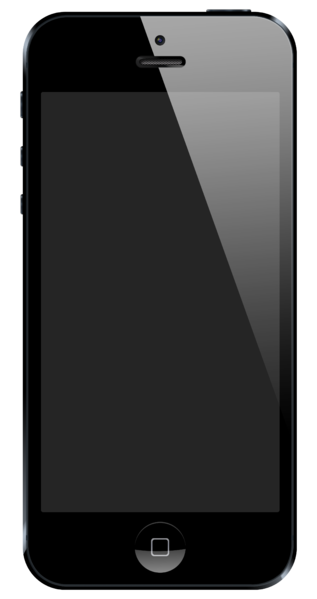

| главная |
iphone 3g/3gs |
iphone 3g/3gs |
iphone 4/4s |
iphone 5c/5s |
iPhone 6/6+ |
iPhone 6S/6S+ |
iPhone SE |
iPhone 7/7+ |
iPhone 8 |
iPhone X |
iPhone XS |
iPhone 5
iPhone 5 — смартфон корпорации Apple, представляет шестое поколение iPhone и является преемником iPhone 4S. Изначально работал на операционной системе iOS 6, которая официально стала доступна 19 сентября 2012 года, затем получил обновление до iOS 7. Phone 5 практически не изменил своих черт по сравнению с iPhone 4, унаследовав многие его конструктивные особенности. В корпусе используются металлические элементы, передняя и задняя часть являются плоскими, экран покрыт стеклом. В дисплее используется технология in-cell touch, которая позволила уменьшить толщину дисплея. Толщина дисплея iPhone 5 составляет 1,5 мм, что на 0,6 мм меньше толщины дисплея iPhone 4S, равной 2,1 мм. Цветовой охват iPhone 5 составляет 72 % пространства NTSC. У iPhone 4S этот показатель составлял 50 %. Технология in-cell touch позволила повысить яркость экрана, хотя охват 72 % пространства NTSC будет достаточен для большого количества пользователей. У новой модели цветовой охват шире, чем у iPhone 4S, и практически равен sRGB, а также повышена эффективность антибликового фильтра.
Одновременно с новым iPhone, компания Apple представила новые наушники EarPods. iPhone-версия наушников имеет встроенные пульт и микрофон, а вместо дополнительного уплотнения, как у большинства наушников-вкладышей, новинка выполнена в необычном дизайне. Идея состоит в улучшении звучания: отверстие сзади каждой «капельки» помогает потоку воздуха повысить средние частоты, в то время как два других отверстия помогают улучшить бас. Гнездо в iPhone 5 для наушников перенесено на нижнюю грань телефона, оно по-прежнему стандарта 3,5 мм TRS. Разработка новой версии наушников шла в течение 3 лет. Для испытания их использовалась фокус-группа, состоящая из 600 человек. Хотя ходят слухи, что Стив Джобс не пользовался услугами фокус-групп. IPhone 5 получил новый разъём для соединения с док-станцией, получивший название Lightning («Молния»). Он заменит 30-контактный разъём, который был введён в 2003 году, с появлением первых поколений iPod. Готовятся к выпуску переходники из Lighting в VGA и HDMI.
4 сентября 2012 года Apple разослала приглашения журналистам на мероприятие. В приглашении было изображено число 12, отбрасывающее тень в виде числа 5. 11 сентября 2012 года, за день до анонса нового iPhone, акции компании Apple упали в цене на 0,32 % на бирже Nasdaq. И их стоимость составила 660,59 долларов США за акцию. 12 сентября 2012 годa компания Apple представила новый смартфон iPhone 5, а также iPod nano 7-го поколения и iPod touch 5-го поколения. Новый iPhone работает под управлением iOS 6, которая стала доступна 19 сентября 2012 года, кроме того, компания представила новую версию программы iTunes версии 11, которая стала доступна для загрузки 30 ноября 2012 года. На мероприятии также оповестили о новом магазине Apple Store в Барселоне и о закрытии музыкальной сети Ping. Большую часть анонса iPhone 5 проводил Фил Шиллер; генеральный директор Apple Тим Кук участия в анонсе не принимал. Завершилось мероприятие выступлением группы Foo Fighters
Смартфон спроектирован главным дизайнером Apple Джонатаном Айвом.